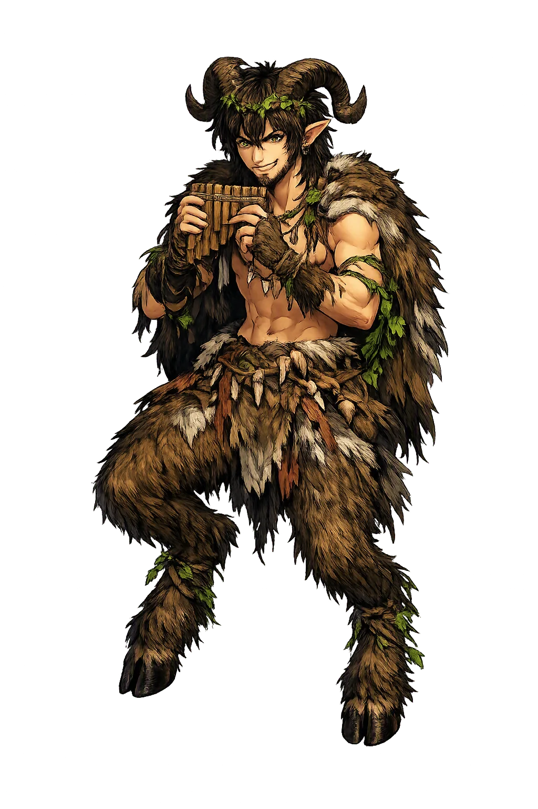
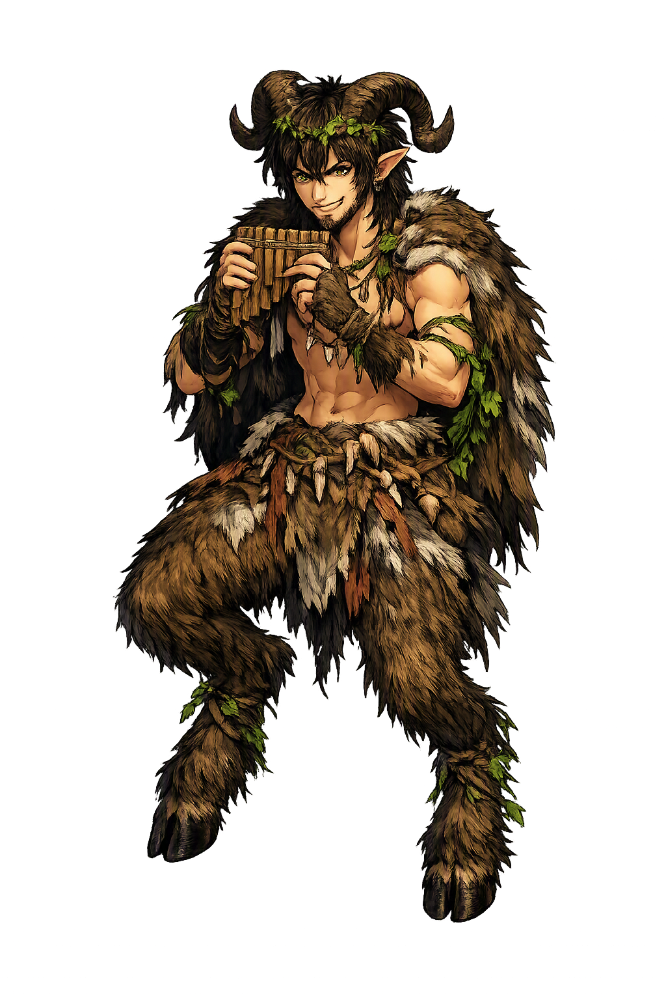

The Authentic Orthography
Wilderness, Shepherds, Flocks · Wilderness, Shepherds, Flocks · God of shepherds, flocks, mountain wilds, and the panic that strikes lonely places; his name was popularly derived from Greek πᾶν ("all") but likely originated in Arcadian Πάων ("shepherd")

Unicode restoration and ASCII comparison
Πάν
The name in its original Greek form. Pān (Πάν) is attested in the source tradition — “God of shepherds, flocks, mountain wilds, and the panic that strikes lonely places; his name was popularly derived from Greek πᾶν ("all") but likely originated in Arcadian Πάων ("shepherd")”. Its acute accents carry the full phonetic and orthographic weight of the source tradition.
pan
Reduced to plain pan, the name loses everything that made it specific: acute accents. What remains is an ASCII string that machines can parse but that no longer speaks with its original voice.
Pān
The Unicode restoration recovers what ASCII flattened. Pān restores acute accents, returning the name to its original written dignity. The domain encodes to Punycode, but the browser displays the truth.
Pān.com → xn--pn-dla.com
The non-ASCII characters in Pān are encoded while the ASCII remains visible. To the DNS, it is Punycode. To humanity, it is Pān.
How Pān is preserved in writing
A bespoke provenance study for Pān is being prepared by the PUNICODEX scholarly team.
Contribute scholarly provenance →Owned, ideal, and ASCII forms of Pān
Pān
Restores Πάν. The live temple domain — pān.com.
Pán
Restores Πάν. Stress-preserved ideal form; currently registered/unavailable. Not in the PuniCodex collection.
pan
Flattens Πάν. The plain ASCII fallback — what DNS and legacy systems see.
How Pān was spoken
Shepherds, flocks, the mountain solitudes, and the fear that walks at noon
Pān is the goatherd-god of Arcadia: master of shepherds and flocks, lord of the mountain wilds, and author of the sudden, groundless terror the Greeks named for him. He belongs to the empty places and the empty hours — above all to noon, when the hills fall silent and the wise shepherd lays down his pipe. His temples were caves, his congregation the nymphs, and his music the sound a reed makes when it is no longer a girl.
Lord of goats and their keepers, he makes the flock fertile and haunts the still noon hour when the herds lie down (Homeric Hymn to Pan).
Arcadia’s own god — crag, cave, and ridge are his temple, where he dances with the mountain nymphs at dusk.
The word panic preserves his name: the groundless terror that sweeps armies and lone travellers is his gift — pánikos, “of Pan”.
Stories of Pān
Pān is late to Olympus and always half outside it: a god of the threshold between pasture and wilderness, music and dread, whose stories are told by shepherds, runners, and sailors — never by kings.
In Metamorphoses 1 (689–712), Ovid tells how Pān pursued the Arcadian nymph Syrinx to the river Ladon, where her sisters' prayers changed her into marsh reeds just as his arms closed around her. His sigh stirred the reeds into music, and, vowing that he and she would speak together so, he bound reeds of unequal length with wax and made the pipe that keeps her name. The syrinx is therefore not an instrument Pān owns but a beloved he could not hold — and its breathy voice is the sound of desire outlasting transformation.
Herodotus (6.105) records that when the Athenian messenger Pheidippides was sent to Sparta before Marathon, Pān met him on Mount Parthenion above Tegea, called him by name, and asked why Athens paid no honors to a god well-disposed toward the city, who had often helped it and would again. After the victory the Athenians believed him: they founded his shrine in the cave on the north slope of the Acropolis and honored him with annual sacrifices and a torch-race (6.106). Few gods enter the historical record so precisely — a named mountain, a named witness, and a cult whose founding can be dated to 490 BCE.
The Homeric Hymn to Pan (19.35–47) makes him the son of Hermes and an Arcadian nymph, born goat-legged, horned, and laughing; his nurse took one look and fled. Hermes, delighted, wrapped him in hare-skins and carried him to Olympus, where all the immortals were gladdened by him — and so, the hymn puns, they named him Pan because he charmed them all (πάντες). The joke is ancient and serious at once: even his birth hymn derives his name from πᾶν, the very folk-etymology Plato would tease in the Cratylus.
Plutarch, in On the Obsolescence of Oracles 17 (Moralia 419c–d), tells that in the reign of Tiberius a ship drifting off the Echinades heard a voice from shore calling the Egyptian pilot Thamus by name, bidding him proclaim off Palodes: 'The great Pān is dead' (Πὰν ὁ μέγας τέθνηκε). When he obeyed, a great groaning rose from the land. Early Christian writers seized on the tale as the death-knell of the old gods; modern scholars are less certain what Thamus heard — some detect a garbled ritual lament for a dying eastern god — and Plutarch himself offers it only as a puzzle. It remains the strangest afterlife of the most earthly of gods.
Pān is the god of the hour when the world goes quiet. Theocritus (Idyll 1.15–17) preserves the shepherds' rule: do not pipe at noon, for Pān is resting from the hunt, and bitter anger sits upon his nostrils. Yet the same rustics who feared him also chastised him — in Idyll 7 (106–108) the Arcadians scourge his statue with squills when the larder is empty — a familiarity no Olympian would tolerate. That intimacy is the point: Pān is the divine at its least transcendent, the god of the day's empty middle and the hill's far side, whom one may fear, feed, whip, and laugh with. The Greeks did not believe in him the less for treating him so; they believed in him the more, as one believes in weather.
Enter Extended Lore